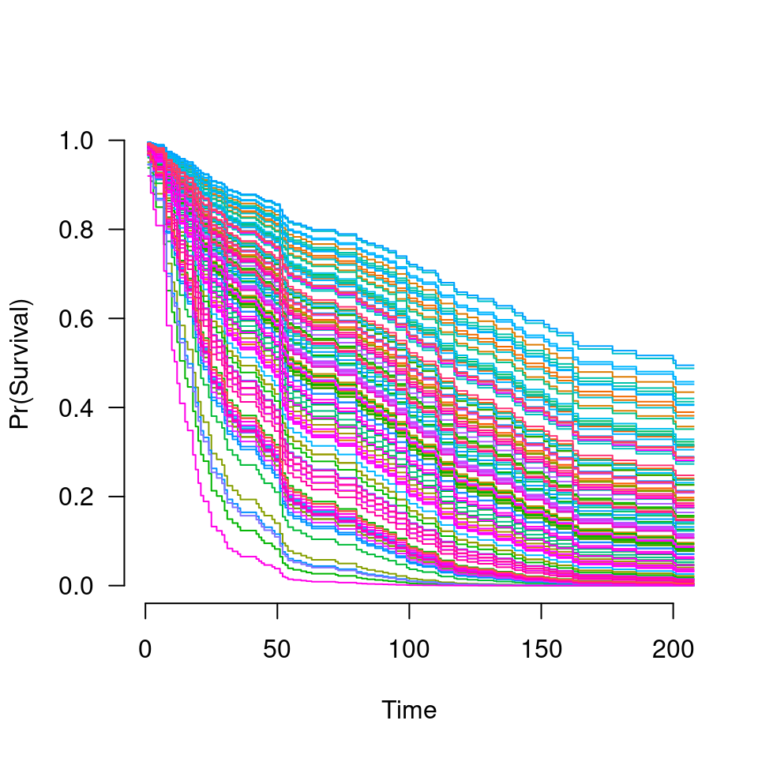

Similar to other predict methods, this function returns predictions from a fitted grpsurv object.
# S3 method for grpsurv predict( object, X, type = c("link", "response", "survival", "hazard", "median", "norm", "coefficients", "vars", "nvars", "groups", "ngroups"), lambda, which = 1:length(object$lambda), ... )
| object | Fitted |
|---|---|
| X | Matrix of values at which predictions are to be made. Not required for some |
| type | Type of prediction: |
| lambda | Regularization parameter at which predictions are requested. For values of |
| which | Indices of the penalty parameter |
| ... | Not used. |
The object returned depends on type.
Estimation of baseline survival function conditional on the estimated values of beta is carried out according to the method described in Chapter 4.3 of Kalbfleisch and Prentice.
Kalbfleish JD and Prentice RL (2002). The Statistical Analysis of Failure Time Data, 2nd edition. Wiley.
Patrick Breheny
data(Lung) X <- Lung$X y <- Lung$y group <- Lung$group fit <- grpsurv(X, y, group) coef(fit, lambda=0.05)#> trt karno1 karno2 karno3 diagtime1 diagtime2 #> 0.08037515 -6.17591904 0.78016422 -0.46524844 0.00000000 0.00000000 #> age1 age2 age3 prior squamous small #> -0.30698476 0.28311172 -0.98219083 0.00000000 -0.39419164 0.17559226 #> adeno large #> 0.41116562 -0.18990837#> 1 2 3 4 5 6 #> -0.3797934 -0.5934333 -0.2596129 -0.3895304 -0.5881482 0.7865260#> 1 2 3 4 5 6 #> 0.6840027 0.5524274 0.7713501 0.6773749 0.5553547 2.1957550#> [1] 0.5126102#> [1] 105#> [,1] [,2] [,3] [,4] [,5] [,6] [,7] [,8] [,9] [,10] #> [1,] 80 80 80 73 80 80 84 87 90 92 #> [2,] 80 80 80 82 84 90 95 95 99 100 #> [3,] 80 80 80 73 80 80 84 87 90 92 #> [4,] 80 80 80 73 80 80 84 87 90 92 #> [5,] 80 80 80 82 84 90 95 95 99 100 #> [6,] 80 61 54 52 51 48 45 43 42 36 #> [7,] 80 72 61 59 56 56 56 56 56 56 #> [8,] 80 82 87 90 95 99 103 110 111 112 #> [9,] 80 73 72 63 63 72 72 73 80 80 #> [10,] 80 80 80 82 84 90 95 95 99 100#> $`0.1` #> karno1 karno2 karno3 squamous small adeno large #> 2 3 4 11 12 13 14 #> #> $`0.01` #> trt karno1 karno2 karno3 diagtime1 diagtime2 age1 age2 #> 1 2 3 4 5 6 7 8 #> age3 prior squamous small adeno large #> 9 10 11 12 13 14 #>#> 0.1 0.01 #> 7 14